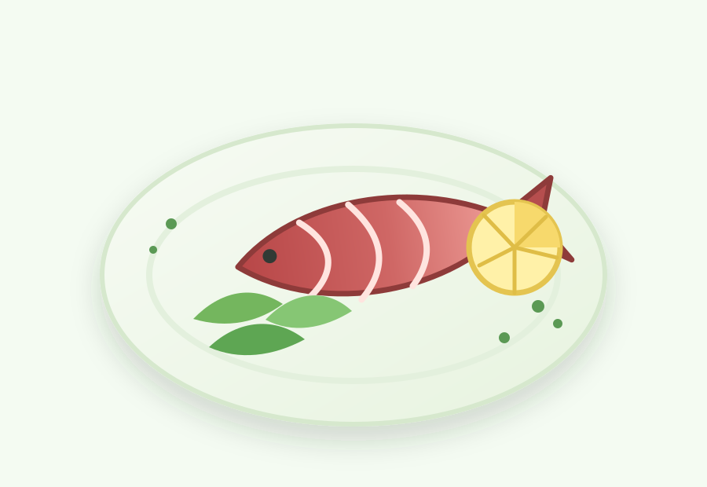

金枪鱼
快速回答
金枪鱼可以加入抗炎饮食，尤其适合做沙拉、碗餐和快速午餐。日常使用时，罐装淡金枪鱼通常是更现实的低汞选择；长鳍金枪鱼、黄鳍金枪鱼和金枪鱼鱼排则更适合控制频率、和其他鱼类轮换。
它是什么
金枪鱼是一类大型海鱼，常见形式包括罐装、袋装、新鲜、冷冻和鱼排。常见种类包括鲣鱼、长鳍金枪鱼、黄鳍金枪鱼和大眼金枪鱼。
在日常饮食里，很多人最常接触的是罐装淡金枪鱼或罐装长鳍金枪鱼。淡金枪鱼通常来自鲣鱼，汞含量一般低于长鳍金枪鱼或更大型的金枪鱼品种。
为什么金枪鱼可能有助于抗炎饮食
金枪鱼提供蛋白质、硒、维生素 B12、烟酸和一定 omega-3 脂肪酸。它可以让以蔬菜为主的一餐更完整，而且不需要复杂烹饪。
它最大的实际优点是方便。一罐或一袋金枪鱼，就可以把绿叶菜、豆类、藜麦、番茄、牛油果或全谷物吐司变成一顿快速餐。需要权衡的是，金枪鱼不适合作为唯一鱼类来源，应和其他鱼类和蛋白质轮换。
如何选择金枪鱼
- 想要常备、低汞一些的选择时，可优先考虑罐装淡金枪鱼。
- 长鳍金枪鱼或白金枪鱼通常比淡金枪鱼汞含量更高，适合少一些使用。
- 黄鳍金枪鱼和金枪鱼鱼排更适合控制频率。
- 如果担心汞暴露，应避免大眼金枪鱼；FDA 将它列为应避免的选择。
- 把金枪鱼和三文鱼、沙丁鱼、鲭鱼、豆类、扁豆、鸡蛋或酸奶轮换。
金枪鱼怎么吃
- 用橄榄油、柠檬、芹菜、香草和黑胡椒拌成更清爽的金枪鱼沙拉。
- 把金枪鱼加入藜麦、菠菜、番茄、黄瓜和牛油果碗餐。
- 搭配全谷物吐司、芥末、绿叶菜和番茄片做快速午餐。
- 用金枪鱼、鹰嘴豆、欧芹、橄榄油和柠檬做一份简单餐。
- 多搭配烤蔬菜，不必每次都做成厚重蛋黄酱口味。
购买和保存
可以根据做法选择水浸或橄榄油浸金枪鱼。经常吃罐头食品时，建议比较钠含量。未开封的罐头和袋装金枪鱼适合常备；开封后应冷藏，并尽快食用。
FAQ
金枪鱼抗炎吗？
金枪鱼可以作为抗炎饮食中的一种鱼类蛋白。它提供蛋白质，也含有一定 omega-3 脂肪酸，但更适合作为多样化饮食中的一个选择，而不是医疗治疗或唯一的鱼类来源。
哪种金枪鱼汞含量相对低？
根据 FDA 鱼类食用建议，罐装淡金枪鱼，包括鲣鱼，被列为 Best Choice；长鳍金枪鱼或白金枪鱼、黄鳍金枪鱼被列为 Good Choice；大眼金枪鱼被列为应避免的选择。
罐装金枪鱼健康吗？
罐装金枪鱼可以是方便的常备蛋白，尤其适合搭配蔬菜、全谷物、豆类、橄榄油和香草。建议比较钠含量，并和三文鱼、沙丁鱼、鲭鱼等鱼类轮换。
金枪鱼可以每天吃吗？
不建议把金枪鱼作为每天固定的鱼类选择，因为不同种类汞含量差异较大。如果你正在怀孕、哺乳、给孩子选择鱼类，或有具体健康顾虑，应参考官方鱼类食用建议并咨询合格专业人士。
证据说明
本文将金枪鱼作为抗炎饮食中可以辅助搭配的一种鱼类食物来介绍，而不是把它作为医疗手段。对于怀孕、哺乳、儿童饮食或经常吃鱼的人来说，汞风险尤其需要重视。